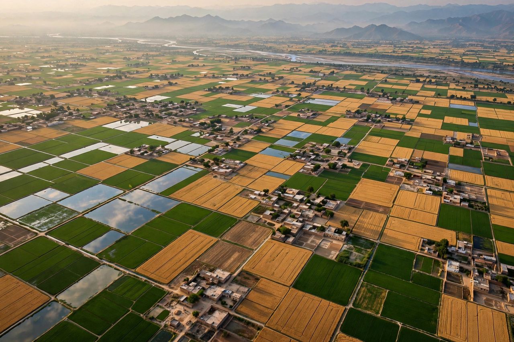

From Wikipedia, the free encyclopedia
| Punjab | |
|---|---|
| Location | Northern South Asia |
| Countries | India and Pakistan |
| Name origin | Persian panj (five) + ab (waters) — 'Land of Five Rivers' |
| Major cities | Lahore, Amritsar, Ludhiana, Chandigarh |

Punjab is a region in northern South Asia, straddling the border of modern-day India and Pakistan. Its name comes from the Persian words panj (five) and ab (water), referring to the five rivers that cross it: the Jhelum, Chenab, Ravi, Beas and Sutlej, all tributaries of the Indus. In 1947, at the Partition of British India, the region was divided between India and Pakistan; the larger western portion became the Pakistani province of Punjab, and the eastern portion the Indian state of Punjab (subsequently reorganised, with Haryana and Himachal Pradesh separated from it in 1966).
The Punjab plains are among the most fertile agricultural regions in South Asia, formed by the alluvium of the Indus river system. Agriculture, especially wheat, rice, cotton and sugarcane, dominates the economy, and the region is often called the breadbasket of both countries. The Indian state's capital is Chandigarh, a planned city designed under Le Corbusier; the Pakistani province's capital is Lahore.
Punjab was a heartland of the Indus Valley Civilisation and later saw invasions and rule by Persians, Alexander the Great's armies, the Mauryas, Mughals and others. In the 15th–16th centuries Guru Nanak founded Sikhism in the region, and in the early 19th century Maharaja Ranjit Singh built a Sikh Empire centred on Lahore and Amritsar. The British annexed Punjab in 1849 after the Anglo-Sikh wars. Partition in 1947 triggered mass migrations and violence between religious communities, remembered as one of the largest population transfers in history.
Punjabi is the region's principal language, written in the Gurmukhi script in India and Shahmukhi in Pakistan. The culture is known for bhangra music and dance, Punjabi cuisine, and the harvest festival of Vaisakhi, which also marks the founding of the Khalsa in 1699. Sikhs form a majority in the Indian state; the Pakistani province is overwhelmingly Muslim, with the region as a whole home to large Hindu, Sikh and Christian minorities.